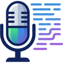

MeetScribeTranscribe tus reuniones de Google Meet, con el nombre de quien habla, y guárdalas en tu navegador.
Instalación
Funciona en Google Chrome (y navegadores basados en Chromium, como Edge o Brave).
- Descarga el archivo .zip con el botón de arriba y descomprímelo en una carpeta fija (por ejemplo,
Documentos\MeetScribe). No la borres ni la muevas después: Chrome la lee desde ahí. - En Chrome abre
chrome://extensions. - Activa el Modo de desarrollador (arriba a la derecha).
- Pulsa Cargar descomprimida y elige la carpeta del paso 1 (la que contiene
manifest.json). - Opcional: fija la extensión con el icono de la pieza de puzle de la barra de Chrome.
Cómo se usa
- Entra a una reunión de Google Meet. En cuanto estás dentro de la llamada (no en la vista previa de la cámara), MeetScribe tarda un par de segundos en activar los subtítulos por ti (puedes desactivarlo en el popup).
- Comprueba que los subtítulos estén activos: es muy importante. Sin subtítulos no hay transcripción. Si no se encendieron, verás abajo a la izquierda una etiqueta roja «Subtítulos apagados»: haz clic en ella o en el botón CC de Meet.
- Habla con normalidad. Cada intervención se guarda con el nombre real de quien la dijo, la hora y el texto. Tu propio nombre aparece en lugar de «Tú».
- Cuelga la reunión. Al terminar, MeetScribe abre solo la página «Ver reuniones» con la transcripción de esa reunión (puedes desactivarlo en el popup). También puedes abrirla cuando quieras desde el icono de la extensión.
Qué guarda de cada reunión
- El nombre de la reunión (el del calendario si lo tiene; si es improvisada, el código).
- Hora de inicio, hora de fin y duración.
- Los participantes.
- La transcripción, con quién habló y a qué hora.
- El chat de la reunión.
- Si lo conectas (opcional), un resumen con decisiones y tareas hecho por tu propia IA (Anthropic, OpenAI, Gemini, un modelo local u OpenCode).
- Screenshots de la reunión: uno a los 10 minutos y luego uno cada 30, que verás en miniatura al final del reporte. También hay un botón de cámara dentro de la reunión, a la izquierda de los controles, para tomar un screenshot cuando quieras. Los automáticos se pueden apagar en el popup.
En «Ver reuniones»
- Buscar en todas las reuniones por palabra, persona o nombre.
- Renombrar una reunión si el nombre no te sirve.
- Descargar una reunión en
.txt,.jsono.pdf(el PDF lleva todo: título, participantes, transcripción, chat y screenshots; se abre el diálogo de impresión de Chrome y eliges «Guardar como PDF»), o copiarla al portapapeles. - Compartir el PDF por Google Drive (icono de compartir): el PDF se sube a tu Drive y se comparte con los participantes que marques, sin contarte a ti; Drive les envía el correo con el enlace. Escribes el correo de cada persona una vez y MeetScribe lo recuerda. El enlace queda en la página de la reunión, y si compartes otra vez se actualiza el mismo archivo. Solo pide permiso sobre los archivos que crea MeetScribe, no sobre el resto de tu Drive.
- Enviar por correo (icono de sobre): abre Gmail con el mensaje ya redactado (resumen y enlace al PDF, nunca la transcripción) y guarda los correos que usas.
- Descargar por fechas: elige un rango (o «Hoy», «7 días», «30 días», «Todo») y baja todas las reuniones de esa ventana en un solo archivo.
- Borrar una reunión que ya no necesites.
Para tener en cuenta
- MeetScribe lee los subtítulos de Meet: si están apagados, no hay transcripción. Tarda un par de segundos en activarlos al entrar a la llamada; si no lo logra, hazlo tú con el botón CC o la etiqueta roja.
- El chat solo se captura mientras el panel de chat está abierto.
- Los participantes salen de quienes hablan, escriben en el chat o aparecen en el panel «Personas» de Meet.
- Los screenshots solo se toman si la pestaña de Meet está a la vista en ese momento; si no, se toma en cuanto vuelvas a ella. Reuniones de menos de 10 minutos no tienen. Salen las caras y lo que se comparta en pantalla. Al guardar cada una suena un obturador. Chrome pide para esto el permiso «leer todos los sitios»; MeetScribe solo captura la pestaña de Meet.
- Si cierras la pestaña de golpe, el fin de la reunión puede quedar aproximado.
- Meet cambia su página de vez en cuando; si algo deja de capturarse tras una actualización suya, avísanos.
Privacidad
Todo queda en tu navegador (chrome.storage). No se envía a ningún servidor. Lo único que hace la extensión por internet es consultar un archivo pequeño en GitHub para avisarte de versiones nuevas.
Excepción, solo si tú la activas: el botón «Conectar mi IA» (opcional) envía la transcripción de tus reuniones al proveedor de IA que elijas (Anthropic, OpenAI, Google u otro), con tu propia clave y a tu costo, para generar el resumen. Si no lo conectas, nunca se envía nada. En ese modal se explican los costos, los límites y qué datos salen.
Otra excepción, solo si compartes: «Compartir» pide permiso a tu cuenta de Google para subir el PDF a tu Drive y darle acceso a quien elijas. El PDF viaja de tu navegador a tu Drive, sin pasar por nuestros servidores. Más detalles en la política de privacidad.
Aviso: si limpias los datos del navegador o quitas la extensión, las reuniones guardadas se pierden. Descarga lo importante.
Actualizar
Cuando haya una versión nueva, la extensión mostrará un aviso verde «Hay una versión nueva». Para actualizar:
- Descarga el .zip nuevo y descomprímelo sobre la misma carpeta, reemplazando los archivos.
- En
chrome://extensionspulsa el botón de recargar de MeetScribe.
Tus reuniones guardadas se conservan al actualizar.